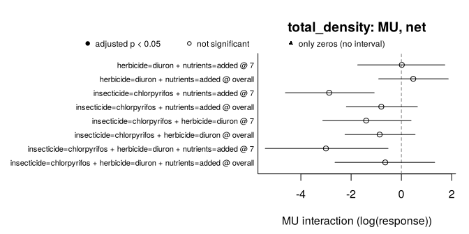

must (MUltiple STressors) detects and classifies non-additive effects of multiple stressors in experiments. It makes explicit the three decisions behind any claim of synergism or antagonism:
-
What the design can identify.
describe_design()reports missing treatment combinations, cells shared by several contrasts, the replication unit, stressors applied to whole groups of units (blocks, whole plots, rooms) and repeated measures, and which interactions are identifiable, before any model is fitted. -
Which model fits the data.
fit_responses()fits a generalised linear mixed model (glmmTMB) to each response and chooses its error distribution by convergence, simulation-based residual checks (DHARMa) and AIC. -
What “non-additive” means.
estimate_interactions()tests each combination of stressors against one or more null models with the same criteria, from the predictions of a single model (post-estimation inference, Madge Pimentel et al. 2025), by default with a correction for experiments with few replicates. The model is the one chosen byfit_responses()or one fitted with another package (lm(),glm(),mgcv::gam(), lme4, glmmTMB and others, through emmeans). The default null model is simple addition (AD), the one that flagged the fewest false interactions across mechanisms in simulations; the multiplicative (MU) and dominance (DO) models, Bliss independence (BL), with the emergent three-way interaction of Beppler et al. (2016), the stress addition model (SAM) of Liess et al. (2016) and concentration addition (CA, Loewe additivity) are chosen innull_models, by name or withsuggest_null_models(), which applies the guidelines of Schäfer & Piggott (2018) to what is known about the stressors. With three or more stressors it separates the net deviation from the single-stressor effects from the pure highest-order interaction.classify_interactions()gives the directional classes of Piggott et al. (2015).
report_interactions() then writes the methods of the analysis, with the works cited, and a table of every decision behind it, from the settings of the objects.
Orr et al. (2020) name the use of null models as a major unresolved issue in multiple-stressor research and ask researchers to know the alternatives and how each relates to a statistical test; must is built to report them side by side.
Status: version 0.2.0, not yet on CRAN. The interface may still change.
The website, https://pabloamadorc.github.io/must/, has the help pages, the vignettes and the case studies.
Installation
# install.packages("remotes")
remotes::install_github("pabloamadorc/must")
# The residual checks used to choose each model need DHARMa:
install.packages("DHARMa")Example
polazzo_zooplankton holds the zooplankton of a mesocosm experiment with a full factorial of an insecticide, a herbicide and nutrients, three mesocosms per combination, sampled four times after the pesticide application (Polazzo & Rico 2021, CC0).
library(must)
zoo <- polazzo_zooplankton[polazzo_zooplankton$day > 0, ]
design <- describe_design(
zoo,
stressors = c("insecticide", "herbicide", "nutrients"),
control = c(insecticide = "absent", herbicide = "absent", nutrients = "ambient"),
unit = "mesocosm",
time = "day"
)
design
#> <must_design> 96 rows, 3 stressors, 8 observed treatment combinations
#> Stressors (control): insecticide (absent), herbicide (absent), nutrients (ambient)
#> Unit: mesocosm | Time: day | By: none | Groups: none
#> Contrast sets: 4 candidate(s), 4 identifiable
#> Checks:
#> info Experimental unit: 'mesocosm' (24 units, each in a single
#> treatment combination).
#> info Units per treatment combination: 3.
#> info Units are measured repeatedly (4 sampling times; 4 per unit).
#> Samplings of the same unit are not independent: by default
#> fit_responses() adds a random intercept per unit, which assumes
#> the same correlation between any two samplings of a unit;
#> temporal autocorrelation can be modelled through its `random`
#> argument.
#> info Identifiable contrast sets (net deviation): 3 with 2 stressors;
#> 1 with 3 stressors.
#> info 4 identifiable set(s) share cells (one cell is used by up to 4
#> sets, typically the control): their estimates are correlated,
#> not independent replicates of an interaction.One model per response. residual_checks = TRUE (the default) uses DHARMa; it is switched off here only so that this example runs without it.
fits <- fit_responses(zoo, c("total_density", "cyclopoida", "daphnia"), design,
residual_checks = FALSE, seed = 1, quiet = TRUE)
fits
#> <must_fit> 3 response(s); time structure: interaction; dispersion: common; random effects: (1 | .unit)
#> Residual checks: not run; seed: 1
#> total_density: gamma_log (log link; continuous, detected), AIC 1311.9, n = 96, missing = 0, residual checks: not run
#> cyclopoida: tweedie (log link; continuous, detected), AIC 927.8, n = 96, missing = 0, residual checks: not run
#> daphnia: tweedie (log link; continuous, detected), AIC 410.0, n = 96, missing = 0, residual checks: not runInteractions under the three null models of Madge Pimentel et al. (2025) (AD alone by default), with Krinsky–Robb intervals and the small-sample correction (the default):
est <- estimate_interactions(fits, null_models = c("AD", "MU", "DO"), n_sim = 4000,
seed = 2021)
summary(est)
#> Interactions: Krinsky-Robb simulation; small-sample correction; adjusted p-values (BH) below 0.05
#> Deviating / tested interactions by sampling time:
#> response model estimand 7 14 30 50 overall
#> total_density AD net 0/4 0/4 0/4 0/4 0/4
#> total_density MU net 0/4 0/4 0/4 0/4 0/4
#> total_density DO net 0/3 0/3 0/3 0/3 0/3
#> total_density AD pure 0/1 0/1 0/1 0/1 0/1
#> total_density MU pure 0/1 0/1 0/1 0/1 0/1
#> cyclopoida AD net 0/4 0/4 0/4 0/4 0/4
#> cyclopoida MU net 0/4 0/4 0/4 0/4 0/4
#> cyclopoida DO net 0/3 0/3 0/3 0/3 0/3
#> cyclopoida AD pure 0/1 0/1 0/1 0/1 0/1
#> cyclopoida MU pure 0/1 0/1 0/1 0/1 0/1
#> daphnia AD net 0/1 0/0 0/1 0/1 0/0
#> daphnia MU net 0/1 0/0 0/1 0/1 0/0
#> daphnia DO net 0/1 0/0 0/1 0/1 0/0
#> daphnia AD pure 0/0 0/0 0/0 0/0 0/0
#> daphnia MU pure 0/0 0/0 0/0 0/0 0/0
#>
#> Classes of the net deviations (Piggott et al. 2015) by sampling time:
#> response model 7 14 30 50 overall
#> total_density AD 4 AD 4 AD 4 AD 4 AD 4 AD
#> total_density MU 4 AD 4 AD 4 AD 4 AD 4 AD
#> cyclopoida AD 4 AD 4 AD 4 AD 4 AD 4 AD
#> cyclopoida MU 4 AD 4 AD 4 AD 4 AD 4 AD
#> daphnia AD 1 AD 1 AD 1 AD
#> daphnia MU 1 AD 1 AD 1 AD
#>
#> Agreement between null models (AD, MU, DO), robust/model-dependent/conflicting/none:
#> response estimand 7 14 30 50 overall
#> total_density net 0/0/0/4 0/0/0/4 0/0/0/4 0/0/0/4 0/0/0/4
#> total_density pure 0/0/0/1 0/0/0/1 0/0/0/1 0/0/0/1 0/0/0/1
#> cyclopoida net 0/0/0/4 0/0/0/4 0/0/0/4 0/0/0/4 0/0/0/4
#> cyclopoida pure 0/0/0/1 0/0/0/1 0/0/0/1 0/0/0/1 0/0/0/1
#> daphnia net 0/0/0/1 0/0/0/0 0/0/0/1 0/0/0/1 0/0/0/0
#> daphnia pure 0/0/0/0 0/0/0/0 0/0/0/0 0/0/0/0 0/0/0/0
#>
#> Counts of boundary tests and of rows not estimated: `$interactions`; classes: `$classes`.The three-stressor set on day 7, with and without the correction (correction = "none" is the asymptotic procedure of Madge Pimentel et al. 2025):
asymptotic <- estimate_interactions(fits, n_sim = 4000, seed = 2021, correction = "none")
day7 <- function(x) {
e <- x$estimates
e <- e[e$response == "total_density" & e$time == "7" & e$order == 3L &
e$component == "interaction" & e$null_model == "AD",
c("estimand", "estimate", "lower", "upper", "df", "p_value", "p_adjusted")]
e[c("estimate", "lower", "upper")] <- lapply(e[c("estimate", "lower", "upper")], signif, 3)
e[c("p_value", "p_adjusted")] <- lapply(e[c("p_value", "p_adjusted")], signif, 2)
rownames(e) <- NULL
e
}
day7(est)
#> estimand estimate lower upper df p_value p_adjusted
#> 1 net -1580 -3770 -320 16 0.023 0.18
#> 2 pure 645 -1120 2800 16 0.410 0.56
day7(asymptotic)
#> estimand estimate lower upper df p_value p_adjusted
#> 1 net -1610 -3020 -650 Inf 0.0025 0.02
#> 2 pure 654 -647 2210 Inf 0.3100 0.42On day 7 the three-stressor combination falls below the sum of the single effects (net), but its pure third-order interaction does not differ from zero: the net deviation comes mainly from the pairwise interactions (net = pure + the three pairwise interactions), so it is not, by itself, evidence of a three-way interaction. With 24 mesocosms in 8 treatment combinations the correction uses a t distribution with 16 degrees of freedom: the intervals widen and, once adjusted across the sets and sampling times, the net deviation is no longer significant, whereas the asymptotic procedure would call it significant. (The estimates differ slightly because, with random effects, the corrected ones come from the REML refit.)

cls <- classify_interactions(est)
table(cls$response, cls$class, useNA = "ifany")
#>
#> AD <NA>
#> cyclopoida 40 20
#> daphnia 6 54
#> total_density 40 20“AD” means that no deviation was detected, not that additivity was shown. NA classes are the dominance model, which Table 1 of Piggott et al. (2015) does not cover, and the sets that need a treatment combination where the herbicide alone eliminated Daphnia: that single effect is tested from the probability of observing only zeros (status = "boundary"), but the interactions that use it cannot be measured.
report_interactions() writes the methods of this analysis from the settings of the objects; this is its paragraph on the models:
report <- report_interactions(est, classes = cls)
cat(strwrap(report$methods[[2]], width = 100), sep = "\n")
#> The analysis was run with the R package must 0.2.0 (Amador Crespo 2026) in R 4.3.3 (R Core Team
#> 2024). Each response (total_density, cyclopoida and daphnia) was modelled with a generalized linear
#> mixed model with one mean per treatment combination and sampling time (a cell-means model) and a
#> random intercept for each mesocosm, fitted by maximum likelihood with glmmTMB 1.1.8 (Brooks et al.
#> 2017). The error distribution was chosen among candidates suited to the values of each response
#> (Gaussian (identity link), Gaussian (log link), Gamma (log link) and lognormal (log link), for
#> total_density; Gaussian (identity link), Gaussian (log link) and Tweedie (log link), for cyclopoida
#> and daphnia): the candidate that converged with a positive-definite Hessian and had the lowest AIC
#> was selected. The models selected were Gamma (log link) for total_density; Tweedie (log link) for
#> cyclopoida and daphnia. The means of the treatment combinations with only zeros (6 for daphnia)
#> were fixed at the boundary of the link function; a contrast that compares such a combination with
#> its expectation was tested from the probability of observing only zeros under that expectation, and
#> contrasts that need such a combination to compute it were not estimated. For the inference, the
#> selected models were refitted by restricted maximum likelihood (REML).report$decisions lists every decision with its argument, the value used, its default and its source, and format(report, format = "markdown") gives the paragraphs, the table and the references for an R Markdown or Quarto document.
Methods and decisions
| Null model | “No interaction” means | Interaction estimate (two stressors) |
|---|---|---|
| AD, simple addition | changes add up on the response scale | yAB − yA − yB + y0 |
| MU, multiplicative | relative changes multiply | ln yAB − ln yA − ln yB + ln y0 |
| DO, dominance | the strongest single effect prevails | min(yAB, y0) − min(yA, yB) |
| BL, Bliss independence | relative responses w = y / y0 multiply | wAB − wA wB |
| SAM, stress addition | the general stresses of the stressors add up | wAB − wSAM |
| CA, concentration addition | each stressor acts as a dilution of the others | wAB − wCA |
-
Choosing the null models.
suggest_null_models()follows the guidelines of Schäfer & Piggott (2018, Fig. 3): whether the stressors act similarly, whether one acts specifically on physiology, whether the effect is mortality, whether the stressor-effect relationship or the sensitivity distribution is known, how the sensitivities are correlated, and how large the effects of the stressors alone are relative to the effect limit (given, or estimated from the fitted model with their intervals). Unknown criteria take every value, so that it returns the range of null models that the guidelines allow, with the reasons for each; the result goes toestimate_interactions(null_models = ). Stressors may also increase the response: their effects keep their sign, each set gets the interaction type of Piggott et al. (2015), and a proportion that the stressors increase is judged on its complement. -
Default null model. AD. In simulated experiments generated without interaction by AD, MU (or BL), DO, SAM or CA, each null model flagged interactions at about the nominal rate when the data followed its own mechanism, but none was robust to all; AD flagged the fewest false interactions on average among the null models that two-level factorials can test (20%, against 24% for MU and BL, 27% for SAM and 32% for DO), with a rule fixed before the simulations. Data generated by stress addition looked synergistic to every other null model. CA was more robust still in dose designs, which it needs. The simulation is installed with the package (
system.file("simulations", package = "must")). Name the null model of a mechanistic hypothesis innull_models; with several,compare_null_models()tells which interactions all of them flag ("robust"), which only some ("model_dependent") and which they flag in opposite directions ("conflicting"). -
Equivalence. “AD” means only that no deviation was detected. With an equivalence margin declared before the analysis (
margin, no default), each interaction is also tested for equivalence (two one-sided tests on its relative deviation, (observed − expected) / reference, the same scale for every null model), andclassify_interactions()tells deviations, negligible deviations, equivalence and inconclusive results apart. -
Estimands. For k ≥ 3 stressors,
net= yK − Σ yi + (k − 1) y0 (or on the log scale) andpure= inclusion–exclusion over all 2^k combinations; under BL,net= wK − Π wi and, for three stressors,pureis the emergent interaction of Beppler et al. (2016), with their rescaled value reported as a description of size. SAM and CA give the net interaction only, and CA needs at least two doses of each stressor tested alone. DO is defined for two stressors only. By default, interactions are estimated with the other stressors at control;background = "all"indescribe_design()also estimates them in the presence of the others. -
Inference. Krinsky–Robb simulation (as in Madge Pimentel et al. 2025) or the delta method (not for DO). By default (
correction = "small_sample") the covariance comes from a REML refit and the sampling distribution is a t with the degrees of freedom of the experimental units (columndf);correction = "none"reproduces the asymptotic procedure. p-values are adjusted with Benjamini–Hochberg across contrast sets and sampling times; averages over times (time = "overall") are adjusted separately, and pre-treatment samplings declared inbaselineare not tested. -
Responses. Counts, continuous values with or without zeros (Tweedie), successes out of a number of trials (
trials) and counts per unit of effort (offset); one dispersion for all, perbygroup or per treatment combination (dispersion). A combination with only zeros is tested from the probability of that outcome under the null model. -
Reporting.
report_interactions()writes the methods from the settings of the objects (design, model selection, null models and the criteria behind them, inference and classes), with the works cited, and a table with every decision: the argument that controls it, the value used, its default and whether it was the default, set by the user, chosen by must or estimated. -
Models fitted outside must.
estimate_interactions(model, design)takes the means of the treatment combinations from emmeans and applies the same contrasts and tests; the degrees of freedom are those of emmeans or are given indf. -
Assumptions. Means are conditional on random effects at zero; MU, DO, BL, SAM and CA assume that an increase in the response means tolerance (declare the responses where it means sensitivity in
sensitivity); a random intercept per unit does not model temporal autocorrelation (an AR1 structure can be given inrandom); selection of the error distribution is not included in the uncertainty.
vignette("must") walks through these decisions in more detail, and vignette("mesocosms") applies the whole workflow to the two mesocosm experiments whose data come with the package (Polazzo & Rico 2021; Hermann et al. 2024). The case studies of the website reanalyse six published experiments with other designs, whose data also come with the package, from drought and plant invasion on field plots in blocks to five global changes on split plots.
Status of the checks
- Verified against independent results: cell means and delta-method standard errors for Gaussian and Poisson models (hand calculations); with the small-sample correction, the AD intervals of a Gaussian model equal those of
lm(); Welch–Satterthwaite degrees of freedom with one dispersion per combination; the probability of a combination with only zeros (closed forms and numerical integration); the dominance estimate; the identity net = pure + pairwise interactions for three stressors; the Bliss net and emergent interactions and their rescaled values (eqs. 2.1–2.4 of Beppler et al. 2016); the stress addition model (eqs. 2–5 of Liess et al. 2016); concentration addition (no interaction in data that follow it, log-logistic fits equal tonls()); for models fitted outside must, the interaction coefficients and tests oflm(),glm(),mgcv::gam(), glmmTMB and lme4 models; the 45 rows of Table 1 of Piggott et al. (2015); and the seven steps of Fig. 3 of Schäfer & Piggott (2018), with the effects of the stressors alone and their intervals. - Type I error and power in simulated 2 × 2 experiments (Gaussian, Gamma, negative binomial and Poisson models, with and without repeated measures). With three replicates per combination, the asymptotic tests rejected a true null model in 10–17% of the experiments (Gaussian AD 12.8%, Gamma MU 13.5%, negative binomial MU 10.3%, Gaussian DO 16.5%) and the corrected ones in 2–7%; Poisson tests, without a dispersion parameter, are the same either way.
- Tried on 36 published multiple-stressor data sets with different designs (full and partial factorials with two to twelve stressors, gradients, checkerboards, blocks, split plots, repeated measures, pre-treatment samplings, a stressor applied later than the others, controls shared by several groups or orders of application, survival out of a number of animals, counts per unit of effort, sequential exposures): the description of each design matches an independent tabulation of the original files, and the results that do not depend on the model (raw cell means, net deviations as sums of pure interactions) agree; 143 checks, all passed.
-
R CMD checkruns on Linux, macOS and Windows with GitHub Actions, including the DHARMa residual checks.
References
Beppler, C., Tekin, E., Mao, Z., White, C., McDiarmid, C., Vargas, E., Miller, J. H., Savage, V. M., & Yeh, P. J. (2016). Uncovering emergent interactions in three-way combinations of stressors. Journal of the Royal Society Interface, 13, 20160800. https://doi.org/10.1098/rsif.2016.0800
Hermann, M., Polazzo, F., Cherta, L., Crettaz-Minaglia, M., García-Astillero, A., Peeters, E. T. H. M., Rico, A., & Van den Brink, P. J. (2024). Combined stress of an insecticide and heatwaves or elevated temperature induce community and food web effects in a Mediterranean freshwater ecosystem. Water Research, 260, 121903. https://doi.org/10.1016/j.watres.2024.121903. Data: https://doi.org/10.5281/zenodo.11520459 (CC BY 4.0).
Liess, M., Foit, K., Knillmann, S., Schäfer, R. B., & Liess, H.-D. (2016). Predicting the synergy of multiple stress effects. Scientific Reports, 6, 32965. https://doi.org/10.1038/srep32965
Madge Pimentel, I., Albini, D., Beermann, A. J., Leese, F., Macaulay, S. J., Matthaei, C. D., Orr, J. A., Piggott, J. J., & Schäfer, R. B. (2025). Hypothesis-driven research on multiple stressors: An analytical framework for stressor interactions. Ecology and Evolution, 15, e71959. https://doi.org/10.1002/ece3.71959
Orr, J. A., Vinebrooke, R. D., Jackson, M. C., Kroeker, K. J., Kordas, R. L., Mantyka-Pringle, C., Van den Brink, P. J., De Laender, F., Stoks, R., Holmstrup, M., Matthaei, C. D., Monk, W. A., Penk, M. R., Leuzinger, S., Schäfer, R. B., & Piggott, J. J. (2020). Towards a unified study of multiple stressors: Divisions and common goals across research disciplines. Proceedings of the Royal Society B, 287, 20200421. https://doi.org/10.1098/rspb.2020.0421
Piggott, J. J., Townsend, C. R., & Matthaei, C. D. (2015). Reconceptualizing synergism and antagonism among multiple stressors. Ecology and Evolution, 5(7), 1538–1547. https://doi.org/10.1002/ece3.1465
Polazzo, F., & Rico, A. (2021). Effects of multiple stressors on the dimensionality of ecological stability. Ecology Letters, 24(8), 1594–1606. https://doi.org/10.1111/ele.13770. Data: https://doi.org/10.5061/dryad.qfttdz0gt (CC0 1.0).
Schäfer, R. B., & Piggott, J. J. (2018). Advancing understanding and prediction in multiple stressor research through a mechanistic basis for null models. Global Change Biology, 24(5), 1817–1826. https://doi.org/10.1111/gcb.14073